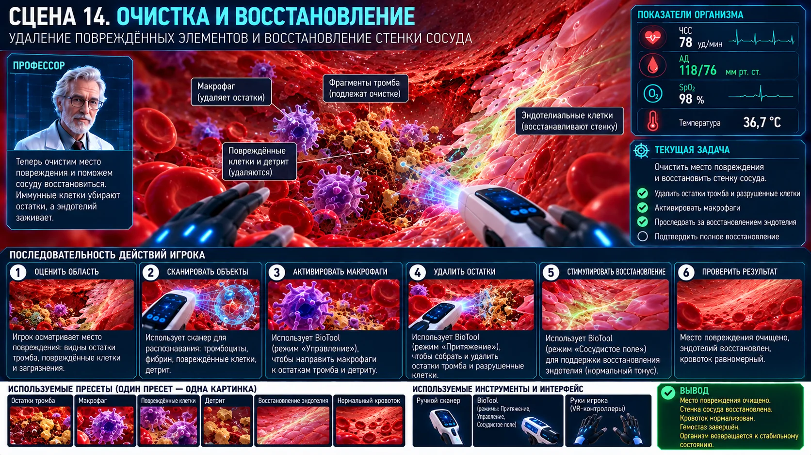

Scene 14 · 30:00–31:30
Очистка и восстановление
Показать очистку повреждённой зоны и восстановление эндотелия.

Сценарная последовательность
Появление фагоцитов
Направление BioTool
Удаление клеточного детрита
Очистка зоны
Миграция эндотелия
Закрытие дефекта
Рост давления
Технические требования сцены
- Детрит — массовый лёгкий VFX/mesh-pool.
- Фагоциты управляются BioTool как направляемые агенты.
- Восстановление стенки — последовательность состояний одного участка.